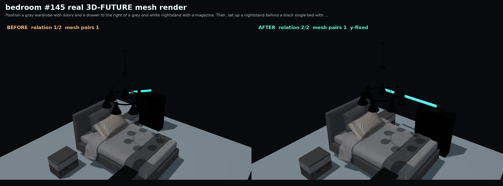
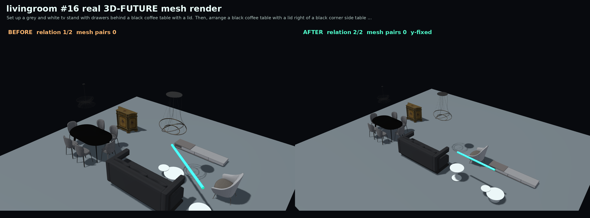
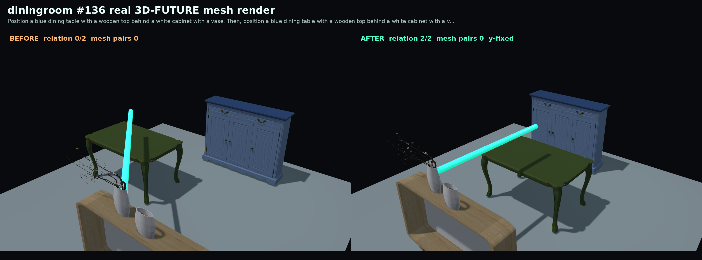

bedroom #145 / curated real 3D-FUTURE mesh
Relation 1/2 -> 2/2
Position a gray wardrobe with doors and a drawer to the right of a grey and white nightstand with a magazine. Then, set up a nightstand behind a black single bed with a white sheet.
Before mesh pairs 1After mesh pairs 1



livingroom #16 / curated real 3D-FUTURE mesh
Relation 1/2 -> 2/2
Set up a grey and white tv stand with drawers behind a black coffee table with a lid. Then, arrange a black coffee table with a lid right of a black corner side table with a round base.
Before mesh pairs 0After mesh pairs 0



diningroom #136 / curated real 3D-FUTURE mesh
Relation 0/2 -> 2/2
Position a blue dining table with a wooden top behind a white cabinet with a vase. Then, position a blue dining table with a wooden top behind a white cabinet with a vase.
Before mesh pairs 0After mesh pairs 0
